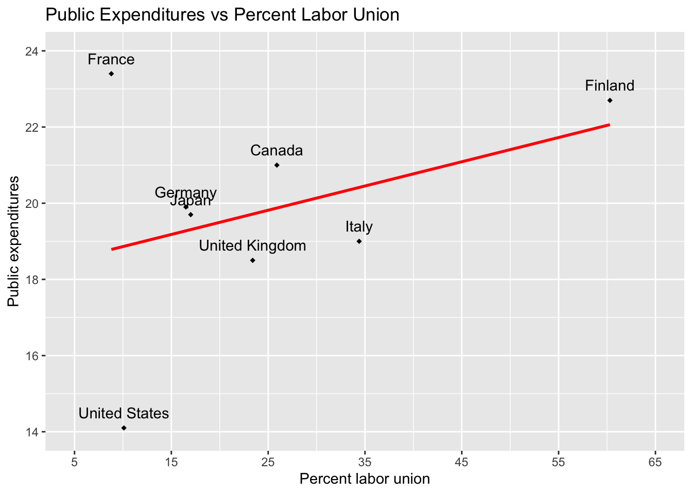
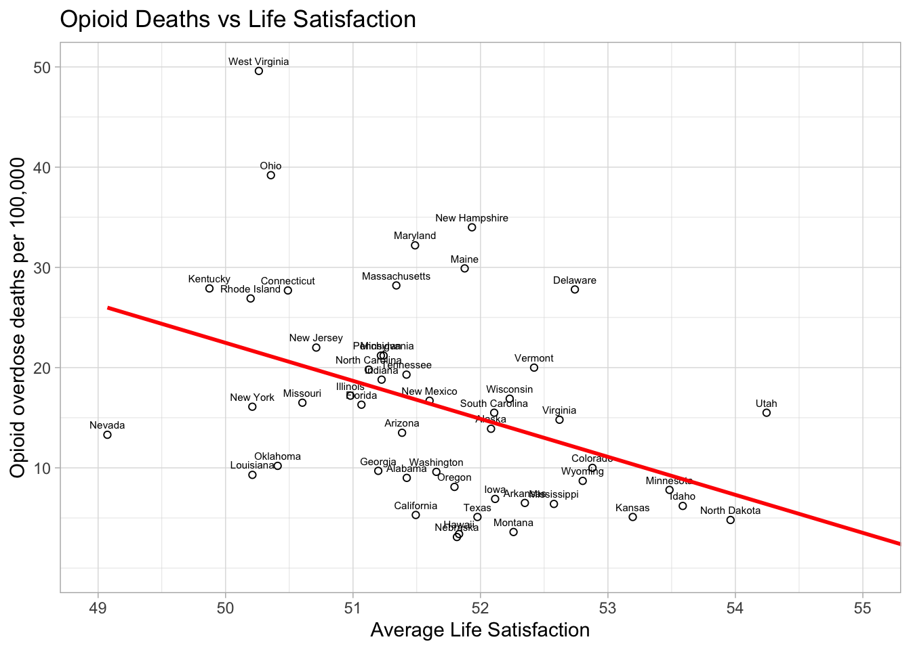

library(usethis) # use_github_file()
library(tidyverse) # read_csv()
library(janitor) # clean_names() 3 Chapter 3
3.1 Page 40
3.1.1 Expenditures vs Labour Graph
3.1.1.1 Activate packages
3.1.1.2 Obtain data and save it to your computer
use_github_file(repo_spec = "https://github.com/johnhoffmannVA/LinearRegression/blob/main/Nations2018.csv",
save_as = "nations2018.csv")3.1.1.3 Load data from your computer
nations2018 <- read_csv("nations2018.csv") %>%
clean_names()3.1.1.4 Inspect data
nations2018 %>%
glimpse() Rows: 8
Columns: 4
$ nation <chr> "Canada", "Finland", "France", "Germany", "Italy", "Japan", "…
$ expend <dbl> 21.0, 22.7, 23.4, 19.9, 19.0, 19.7, 18.5, 14.1
$ econopen <dbl> 64.5, 76.2, 62.7, 87.4, 59.1, 34.6, 60.8, 27.1
$ perlabor <dbl> 25.9, 60.3, 8.8, 16.5, 34.4, 17.0, 23.4, 10.1| nation | expend | econopen | perlabor |
|---|---|---|---|
| Canada | 21.0 | 64.5 | 25.9 |
| Finland | 22.7 | 76.2 | 60.3 |
| France | 23.4 | 62.7 | 8.8 |
| Germany | 19.9 | 87.4 | 16.5 |
| Italy | 19.0 | 59.1 | 34.4 |
| Japan | 19.7 | 34.6 | 17.0 |
| United Kingdom | 18.5 | 60.8 | 23.4 |
| United States | 14.1 | 27.1 | 10.1 |
3.1.1.5 Graph
nations_plot <- ggplot(data = nations2018,
mapping = aes(x = perlabor,
y = expend)) +
geom_point(shape = 18) +
geom_text(mapping = aes(label = nation),
nudge_y = .4) +
geom_smooth(method = "lm",
se = FALSE,
color = "red") +
coord_cartesian(xlim = c(5, 65),
ylim = c(14, 24)) +
scale_x_continuous(breaks = seq(5, 65, by = 10)) +
scale_y_continuous(breaks = seq(14, 24, by = 2)) +
labs(x = "Percent labor union",
y = "Public expenditures",
title = "Public Expenditures vs Percent Labor Union")
print(nations_plot)`geom_smooth()` using formula = 'y ~ x'
3.2 Pages 44 to 46
3.2.1 Opioid vs Satisfaction Analysis
3.2.1.1 Activate packages
library(usethis) # use_github_file()
library(tidyverse) # read_csv()
library(janitor) # clean_names() 3.2.1.2 Obtain data and save it to your computer
use_github_file(repo_spec = "https://github.com/johnhoffmannVA/LinearRegression/blob/main/StateData2018.csv",
save_as = "statedata2018.csv")3.2.1.3 Load data from your computer
Clean names is essential here. It makes sure all column names are lower case. They are not all lower case in the original data file.
statedata2018 <- read_csv("statedata2018.csv") %>%
clean_names()3.2.1.4 Inspect data
There are so many column names in this data set that we do the glimpse a bit differently. That is, we sort the order of the columns alphabetically prior to doing the glimpse(). It affects only the display of the column names - not the structure of the data.
statedata2018 %>%
select(sort(names(statedata2018))) %>%
glimpse() Rows: 50
Columns: 77
$ aa_voted_percent <dbl> 49.6, NA, 50.9, 41.6, 49.9, 31.0, 48.3, 55.…
$ alc_disorder_past_year <dbl> 4.51, 6.57, 5.49, 5.38, 5.51, 6.30, 6.10, 6…
$ assault_rate <dbl> 283.4, 440.2, 252.1, 346.0, 236.6, 192.8, 1…
$ assoc_degree <dbl> 8.2, 8.5, 8.4, 6.7, 7.7, 8.6, 7.5, 7.9, 9.7…
$ bach_degree <dbl> 15.4, 19.0, 18.1, 14.2, 20.6, 24.9, 21.9, 1…
$ binge_alc_past_month <dbl> 21.40, 24.20, 23.10, 19.49, 23.52, 26.97, 2…
$ burglary_rate <dbl> 819.0, 427.6, 647.1, 835.7, 522.3, 438.2, 3…
$ census_division <chr> "EastSouthCentral", "Pacific", "Mountain", …
$ census_region <chr> "South", "West", "West", "South", "West", "…
$ comm_supervision_rate <dbl> 1591.14, 1522.95, 1503.95, 2222.08, 1088.59…
$ community_supervision <dbl> 60700, 8400, 84800, 51500, 333300, 90900, 4…
$ conservative <dbl> 26.00835, 19.27924, 20.40239, 25.04501, 17.…
$ cost_living <dbl> 89.3, 129.9, 97.0, 86.9, 151.7, 105.6, 127.…
$ death_row <dbl> 177, 0, 120, 32, 727, 3, 0, 0, 348, 49, 0, …
$ death_row_rate <dbl> 4.33, 0.00, 2.18, 1.33, 3.59, 0.09, 0.00, 0…
$ doctoral_degree <dbl> 1.0, 1.2, 1.2, 0.9, 1.6, 1.6, 1.6, 1.8, 1.1…
$ dom_mig_rate <dbl> 1.17, -14.58, 11.61, 0.82, -3.95, 7.60, -6.…
$ dom_migration <dbl> 5718, -10752, 83240, 2475, -156068, 43293, …
$ fips_code <dbl> 1, 2, 4, 5, 6, 8, 9, 10, 12, 13, 15, 16, 17…
$ gross_state_product <dbl> 211197, 51479, 326446, 122704, 2797601, 345…
$ guns <dbl> 161641, 15824, 179738, 79841, 344622, 92435…
$ guns_per_capita <dbl> 33.15, 21.38, 25.61, 26.57, 8.71, 16.48, 22…
$ health_exp_per_capita <dbl> 7281, 11064, 6452, 7408, 7549, 6804, 9859, …
$ illicit_disorder_past_year <dbl> 2.86, 3.69, 2.79, 2.80, 2.97, 3.43, 3.47, 3…
$ illicit_drugs_past_month <dbl> 8.67, 16.81, 10.77, 10.51, 13.11, 17.83, 12…
$ infant_mortality_rate <dbl> 9.03, 5.17, 5.32, 8.20, 4.22, 4.76, 4.78, 7…
$ intern_mig_rate <dbl> 0.68, 3.26, 2.00, 0.75, 2.98, 1.44, 4.62, 1…
$ intern_migration <dbl> 3344, 2401, 14335, 2260, 117797, 8207, 1649…
$ larceny_rate <dbl> 2149.5, 2096.4, 2289.1, 2313.5, 1527.4, 185…
$ latinx_voted_percent <dbl> 29.1, NA, 48.8, 20.8, 43.3, 43.9, 41.1, NA,…
$ life_expectancy <dbl> 75.0, 77.8, 79.2, 75.5, 81.0, 80.0, 80.7, 7…
$ life_satis <dbl> 51.42162, 52.08266, 51.38469, 52.34836, 51.…
$ masters_degree <dbl> 6.9, 7.6, 7.8, 5.9, 8.4, 10.9, 12.1, 8.9, 7…
$ med_hh_income <dbl> 48486, 76715, 56213, 45726, 71228, 68811, 7…
$ median_age <dbl> 39.0, 33.5, 37.5, 38.0, 36.4, 36.7, 40.9, 4…
$ mental_illness_past_year <dbl> 19.95, 20.32, 18.02, 20.73, 18.18, 19.86, 1…
$ motor_vehicle_theft_rate <dbl> 209.1, 236.0, 261.3, 188.8, 391.3, 234.8, 1…
$ murder_ms_rate <dbl> 5.7, 5.6, 4.7, 5.6, 4.4, 2.8, 2.4, 5.8, 5.8…
$ opioid_od_death_rate <dbl> 9.0, 13.9, 13.5, 6.5, 5.3, 10.0, 27.7, 27.8…
$ pain_pill_past_year <dbl> 4.53, 4.81, 4.27, 5.03, 4.30, 4.87, 4.21, 4…
$ per_age0_18 <dbl> 24, 27, 24, 25, 24, 24, 22, 22, 21, 26, 23,…
$ per_age19_25 <dbl> 9, 9, 9, 9, 9, 9, 8, 8, 8, 9, 7, 9, 9, 9, 9…
$ per_age26_34 <dbl> 12, 13, 12, 12, 14, 14, 11, 12, 12, 12, 12,…
$ per_age35_54 <dbl> 25, 26, 24, 25, 26, 26, 27, 25, 25, 27, 25,…
$ per_age55_64 <dbl> 14, 13, 12, 13, 12, 13, 15, 14, 14, 12, 13,…
$ per_age65plus <dbl> 17, 12, 18, 17, 14, 14, 17, 19, 21, 14, 19,…
$ per_am_ind_alaskan <dbl> 1.0, 16.0, 4.0, 1.0, 1.0, 1.0, 0.5, 0.5, 0.…
$ per_asian <dbl> 1, 6, 3, 2, 15, 3, 5, 4, 3, 4, 38, 2, 6, 2,…
$ per_black <dbl> 26.0, 3.0, 4.0, 15.0, 5.0, 4.0, 10.0, 21.0,…
$ per_cap_income <dbl> 26846, 35874, 29265, 25635, 35021, 36415, 4…
$ per_child_poverty <dbl> 24, 13, 20, 24, 17, 12, 14, 17, 19, 20, 12,…
$ per_latinx <dbl> 4, 7, 32, 8, 39, 22, 17, 9, 26, 10, 10, 13,…
$ per_pop_change2010_18 <dbl> 2.254, 3.828, 12.192, 3.354, 6.181, 13.247,…
$ per_poverty <dbl> 16.89, 11.11, 14.86, 16.40, 13.30, 10.29, 9…
$ per_white <dbl> 66, 60, 54, 72, 37, 68, 66, 62, 53, 52, 21,…
$ percent_uninsured <dbl> 12.0, 14.3, 12.7, 9.8, 8.3, 8.6, 6.2, 6.8, …
$ pop_change2010_18 <dbl> 107733, 27189, 779358, 97797, 2302522, 6662…
$ pop_density <dbl> 95.4, 1.3, 58.3, 56.9, 246.1, 50.8, 742.6, …
$ pop18and_older <dbl> 3814879, 551562, 5638481, 2317649, 30617582…
$ population <dbl> 4887871, 737438, 7171646, 3013825, 39557045…
$ prison_rate <dbl> 1072.12, 797.73, 975.44, 1035.53, 662.04, 7…
$ prisoners <dbl> 40900, 4400, 55000, 24000, 202700, 32100, 1…
$ professional_degree <dbl> 1.5, 1.8, 1.8, 1.3, 2.4, 2.3, 3.0, 1.9, 2.1…
$ prop_crime_rate <dbl> 3177.6, 2760.0, 3197.5, 3338.0, 2441.1, 253…
$ rape_rate <dbl> 41.3, 104.7, 50.2, 59.4, 29.7, 56.7, 21.7, …
$ religious <dbl> 32.03850, 24.12306, 26.40519, 30.05092, 24.…
$ robbery_rate <dbl> 96.9, 85.4, 92.8, 69.1, 125.5, 56.7, 87.8, …
$ state <chr> "Alabama", "Alaska", "Arizona", "Arkansas",…
$ state_taxes_per_capita <dbl> 2262, 2226, 2272, 3266, 4424, 2599, 5341, 4…
$ suic_rate_age_adj <dbl> 16.6, 27.0, 18.2, 20.8, 10.5, 20.3, 10.5, 1…
$ suicide_idea_past_year <dbl> 3.89, 5.34, 4.02, 4.59, 4.04, 5.41, 4.05, 4…
$ suicide_rate <dbl> 15.90, 28.07, 19.37, 21.72, 11.48, 21.59, 1…
$ tobacco_past_month <dbl> 30.12, 26.68, 21.19, 30.69, 16.23, 20.15, 2…
$ total_voted_percent <dbl> 69.0, 67.7, 68.6, 58.5, 61.5, 65.6, 68.0, 6…
$ unemploy_rate <dbl> 4.1, 6.5, 4.7, 3.5, 4.1, 3.1, 4.2, 4.0, 3.5…
$ violent_crime_rate <dbl> 427.4, 635.8, 399.9, 480.1, 396.1, 309.1, 2…
$ white_voted_percent <dbl> 52.6, 60.3, 65.3, 44.0, 61.4, 62.6, 57.7, 5…3.2.1.5 Graph
state_plot <- ggplot(data = statedata2018,
mapping = aes(x = life_satis,
y = opioid_od_death_rate)) +
geom_point(shape = 1) +
geom_text(mapping = aes(label = state),
nudge_y = 1,
size = 2) +
geom_smooth(method = "lm",
se = FALSE,
color = "red") +
coord_cartesian(xlim = c(49, 55),
ylim = c(0, 50)) +
scale_x_continuous(breaks = seq(49, 55, by = 1)) +
scale_y_continuous(breaks = seq(10, 50, by = 10)) +
labs(x = "Average Life Satisfaction",
y = "Opioid overdose deaths per 100,000",
title = "Opioid Deaths vs Life Satisfaction") +
theme_light()
print(state_plot)`geom_smooth()` using formula = 'y ~ x'
3.2.1.6 Analysis using summary()
lrm3_1 <- lm(opioid_od_death_rate ~ life_satis,
data = statedata2018)
summary(lrm3_1)
Call:
lm(formula = opioid_od_death_rate ~ life_satis, data = statedata2018)
Residuals:
Min 1Q Median 3Q Max
-12.688 -6.952 -1.511 3.408 28.118
Coefficients:
Estimate Std. Error t value Pr(>|t|)
(Intercept) 212.056 56.576 3.748 0.000479 ***
life_satis -3.792 1.093 -3.468 0.001116 **
---
Signif. codes: 0 '***' 0.001 '**' 0.01 '*' 0.05 '.' 0.1 ' ' 1
Residual standard error: 9.292 on 48 degrees of freedom
Multiple R-squared: 0.2004, Adjusted R-squared: 0.1837
F-statistic: 12.03 on 1 and 48 DF, p-value: 0.001116confint(lrm3_1) 2.5 % 97.5 %
(Intercept) 98.302367 325.809877
life_satis -5.989863 -1.5934893.2.1.7 Analysis apa.reg.table()
Using apaTables to display the regression results is probably a better approach. It’s one step and combines everything into one table. But summary() approach does give additional information (e.g., adjusted \(R^2)\)) - so it’s good to be familiar with both approaches.
lrm3_1 <- lm(opioid_od_death_rate ~ life_satis,
data = statedata2018)
library(apaTables)
apa.reg.table(lrm3_1)| predictor | b | b_CI | beta | beta_CI | sr2 | sr2_CI | r | summary |
|---|---|---|---|---|---|---|---|---|
| (Intercept) | 212.06** | [98.30, 325.81] | ||||||
| life_satis | -3.79** | [-5.99, -1.59] | -0.45 | [-0.71, -0.19] | .20** | [.04, .38] | -.45** | |
| \(R^2\) = .200** | ||||||||
| 95% CI[.04,.38] | ||||||||
3.3 Pages 49 to 50
3.3.1 Fitted values and percentiles
See previous section for loading the data.
We want to predict opioid overdose at the 25th, 50th, and 75th percentiles for life satisfaction. So we obtain the life satisfaction values corresponding to these percentiles below.
statedata2018 %>%
select(life_satis) %>%
skim()| Name | Piped data |
| Number of rows | 50 |
| Number of columns | 1 |
| _______________________ | |
| Column type frequency: | |
| numeric | 1 |
| ________________________ | |
| Group variables | None |
Variable type: numeric
| skim_variable | n_missing | complete_rate | mean | sd | p0 | p25 | p50 | p75 | p100 | hist |
|---|---|---|---|---|---|---|---|---|---|---|
| life_satis | 0 | 1 | 51.73 | 1.21 | 49.07 | 51.08 | 51.63 | 52.33 | 55.63 | ▃▇▇▂▁ |
From the above skim() output we extract the percentile information and put it in a table that’s easy to follow below. We can see the life_satis value for each percentile in this table.
| Percentile | life_satis value |
|---|---|
| 25th | 51.1 |
| 50th | 51.6 |
| 75th | 52.3 |
3.3.2 Calculate fitted values
lrm3_1 <- lm(opioid_od_death_rate ~ life_satis,
data = statedata2018)
# we need to use the EXACT name from the original data set
life_satis <- c(51.1, 51.6, 52.3)
fit_for_values = data.frame(life_satis)
predict(lrm3_1, fit_for_values) 1 2 3
18.30148 16.40564 13.75146 The values above are the predicted values for opioid_od_death_rate. We put everything in the table below for clarity. The predicted opioid_od_death_rate value provides a corresponding point on the regression line. That is, all (life_satis value, predicted opioid_od_death_rate value) points fall on the regression line.
| Percentile life_satis | life_satis value | predicted opioid_od_death_rate value |
|---|---|---|
| 25th | 51.1 | 18.30148 |
| 50th | 51.6 | 16.40564 |
| 75th | 52.3 | 13.75146 |
Recall the regression formulas:
\[ \hat{y} = b_0 + b_1X \]
In the context of our variables: \[ \widehat{opioid\_od\_death\_rate} = b_0 + b_1(life\_satis) \]
Recall the regression output:
| predictor | b | b_CI | beta | beta_CI | sr2 | sr2_CI | r | summary |
|---|---|---|---|---|---|---|---|---|
| (Intercept) | 212.06** | [98.30, 325.81] | ||||||
| life_satis | -3.79** | [-5.99, -1.59] | -0.45 | [-0.71, -0.19] | .20** | [.04, .38] | -.45** | |
| \(R^2\) = .200** | ||||||||
| 95% CI[.04,.38] | ||||||||
From this output we get the regression formula:
This formula \[ \widehat{opioid\_od\_death\_rate} = b_0 + b_1(life\_satis) \]
Becomes: \[ \widehat{opioid\_od\_death\_rate} = 212.06 + -3.79(life\_satis) \]
Therfore for our three points:
\[ \begin{aligned} 18.30148 &= 212.06 + -3.79(51.1)\\ 16.40564 &= 212.06 + -3.79(51.6)\\ 13.75146 &= 212.06 + -3.79(52.3)\\ \end{aligned} \]
3.4 Chapter Exercises
3.4.1 Activate packages
library(usethis) # use_github_file()
library(tidyverse) # read_csv()
library(janitor) # clean_names() 3.4.2 Obtain data and save it to your computer
use_github_file(repo_spec = "https://github.com/johnhoffmannVA/LinearRegression/blob/main/HighSchool.csv",
save_as = "highschool.csv")3.4.3 Load data from your computer
highschool <- read_csv("highschool.csv") %>%
clean_names()3.4.4 Inspect data
highschool %>%
glimpse() Rows: 178
Columns: 6
$ row <dbl> 1, 2, 3, 4, 5, 6, 7, 8, 9, 10, 11, 12, 13, 14, 15…
$ id_number <dbl> 2583454, 758606, 6918338, 757890, 4584594, 858964…
$ sports_participation <dbl> 0.00, 1.10, 0.00, 0.00, 1.10, 1.10, 0.69, 0.00, 1…
$ academic_clubs <dbl> 1.61, 0.69, 1.10, 0.00, 0.69, 0.00, 0.69, 1.61, 1…
$ alcohol_use <dbl> 1.39, 0.69, 0.69, 0.69, 0.00, 1.10, 1.95, 0.69, 1…
$ gpa <dbl> 3.25, 4.00, 4.00, 2.88, 4.00, 2.25, 2.12, 3.62, 3…